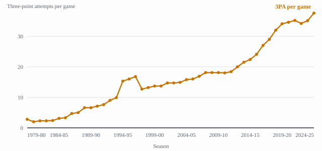
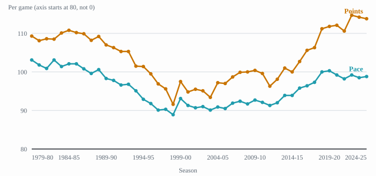

2.1: What Is Different Now
Chapter 2: State of the game
Chapter 1 gave dates. This chapter gives measurements, and it is the chapter where this site is most likely to be wrong, because a number is easy to state and hard to check. So every figure below comes from one saved table of league averages, every figure names the season it belongs to, and where a claim is commonly made that this site cannot check, it appears as a gap rather than as a sentence.
One methodological note first, because it changes how the rest of this lecture reads. The table these numbers come from carries two sets of league averages on one page, regular season and playoffs, with the same column names and the same season labels.1 The playoff rows look exactly like the regular-season rows and are different numbers. Everything below is regular season, and the saved extraction labels every row with the table it came from, so that a reader can check which is which.
1 The three-point rate
The clearest change in the modern game is not that teams make more threes. It is that they attempt vastly more of them, as a share of everything they shoot.
| Season | 3PA per game | FGA per game | Threes as a share of shots |
|---|---|---|---|
| 1979-80 | 2.8 | 90.6 | 3.1% |
| 1996-97 | 16.8 | 79.3 | 21.2% |
| 2004-05 | 15.8 | 80.3 | 19.7% |
| 2014-15 | 22.4 | 83.6 | 26.8% |
| 2024-25 | 37.6 | 89.2 | 42.2% |
Three things in that table are worth saying plainly.
The line’s first season barely used it. In 1979-80, the season the three-point shot was adopted, teams attempted 2.8 of them a game out of 90.6 shots.2 That is the rule existing and nobody using it, which is the subject of lecture 1.4.
The rate did not rise steadily. It was higher in 1996-97 than in 2004-05. A reader told only that “three-point shooting has increased since the line was introduced” would predict a smooth climb and be wrong about two decades of it.
The table gives five seasons because five is what a reader can hold. Every season from 1979-80 to 2024-25 is in the same source, and drawn as a line the shape says something the five rows cannot (Figure 1): the rise is not one climb but three separate movements, and the middle one is a rule change rather than a change of mind.

The spike from 1994-95 to 1996-97 is not explained here. The attempt figures are sourced, so the shape of the line is a fact; the reason for it is not on file. The explanation usually given is a rule change moving the three-point line in and then back out again, and this site has no source for that, so it is not asserted. An earlier version of this caption stated it as fact, which broke the site’s own rule. What would close it: an NBA season recap for 1994-95 or 1997-98 naming the change, acquired with tools/acquire_source.py.
The change since 2004-05 is the large one. From 19.7% of shots to 42.2% is the shift that produced the offense of Chapter 3: the spacing, the corner three, the kick-out, the 5-out floor.
Why this lecture opens at 2004-05. The plan for this site anchors Chapter 2 at the 2004-05 rule cluster, on the same criterion Chapter 1 uses: a boundary is a dated rule change. The rule usually named for that season is the elimination of hand-checking, and this site has no source on file for it: NBA.com’s own season review of 2004-05 does not mention a rule change.3 So 2004-05 is used here as the season the measurements pivot around, which the table shows, and not as a rule change, which this site cannot yet source.
2 Pace
Pace is possessions per game, and it is the number that says whether a game is fast.
| Season | Pace | Points per game |
|---|---|---|
| 1979-80 | 103.1 | 109.3 |
| 1996-97 | 90.1 | 96.9 |
| 2004-05 | 90.9 | 97.2 |
| 2014-15 | 93.9 | 100.0 |
| 2024-25 | 98.8 | 113.8 |
The shape of this is not what a viewer usually expects. The modern game is faster than the 1990s and slower than 1979-80: pace fell for two decades and then rose again, and it has not returned to where it was when the three-point line arrived.4
Drawn together across every season, the two numbers make the point more plainly than either makes it alone (Figure 2). They fall together for twenty years and rise together for twenty more, and the rise is not symmetrical: scoring ends well above where it started while pace ends below. The vertical axis of that chart starts at 80 rather than 0, which is stated on the axis itself, because at a zero baseline both lines sit in the top fifth of the picture and the shape this paragraph describes is invisible.

What has changed more than pace is what a possession is worth. In 1979-80 a game of 103 possessions produced 109 points; in 2024-25 a game of 99 possessions produced 114.5 Scoring is up while pace is down relative to 1979-80, which means the increase is efficiency and not tempo. That is the subject of lecture 2.2.
3 Efficiency and free throws
True shooting percentage is one number that accounts for twos, threes and free throws together. It was .531 in 1979-80, .529 in 2004-05, and .576 in 2024-25.6 Two decades of essentially no change, then a substantial rise.
Free throws moved the other way. Attempts per game were 27.8 in 1979-80, 26.1 in 2004-05, 22.8 in 2014-15 and 21.7 in 2024-25.7 The modern game scores more while shooting fewer free throws, which is worth holding against the common assumption that the increase in scoring is an increase in fouls called.
4 What this lecture does not claim
Shot location is not sourced here. The claim that the mid-range shot has largely disappeared, and that shots have moved to the rim and the arc, is true as far as this site’s authors know and is not on file. The source that publishes shot-location data as a public table is Cleaning the Glass, and its team pages returned HTTP 500 when this site tried to acquire them on 2026-09-21; the league’s own stats pages render their tables with script, and the acquisition tool saved 443 words of page furniture and no data. What would close it: a shot-location table from a source that serves it as HTML, or a saved export.
Positionless lineups and small ball are not sourced here. Both are real and widely described, and neither is a measurement this site has. A count would need lineup data by position, which none of the sources on file carry. What would close it: a public table of lineup composition by season.
Those two gaps are worth as much as the numbers above them. A reader can take every figure in this lecture and check it against the saved table; the two claims in this section are the ones this site would be asking to be believed on, so it does not make them.
The idea to carry into lecture 2.2 is that the numbers here say what changed and not why. The next lecture is about the measurements that changed the decisions: points per possession, the value of a shot by location, and what it means for a shooter to have gravity.
Footnotes
Basketball-Reference, “NBA League Averages - Per Game”, https://www.basketball-reference.com/leagues/NBA_stats_per_game.html, retrieved 2026-09-21. All figures above are from the regular-season table, which the saved extraction labels
[stats-Regular-Season: Per Game Table]; the same page carries a playoff table with identical column names. Rows quoted: “season 1979-80” with “fga_per_g 90.6”, “fg3a_per_g 2.8”, “pts_per_g 109.3”, “pace 103.1”, “ts_pct .531”, “fta_per_g 27.8”; “season 2004-05” with “fga_per_g 80.3”, “fg3a_per_g 15.8”, “pts_per_g 97.2”, “pace 90.9”, “ts_pct .529”, “fta_per_g 26.1”; “season 2014-15” with “fga_per_g 83.6”, “fg3a_per_g 22.4”, “pts_per_g 100.0”, “pace 93.9”, “fta_per_g 22.8”; “season 2024-25” with “fga_per_g 89.2”, “fg3a_per_g 37.6”, “pts_per_g 113.8”, “pace 98.8”, “ts_pct .576”, “fta_per_g 21.7”; and “season 1996-97” with “fga_per_g 79.3”, “fg3a_per_g 16.8”, “pts_per_g 96.9”, “pace 90.1”. The share column is computed from the two attempt columns and is this site’s arithmetic, not the source’s. Saved asbbref-per-game.↩︎Basketball-Reference, “NBA League Averages - Per Game”, https://www.basketball-reference.com/leagues/NBA_stats_per_game.html, retrieved 2026-09-21. All figures above are from the regular-season table, which the saved extraction labels
[stats-Regular-Season: Per Game Table]; the same page carries a playoff table with identical column names. Rows quoted: “season 1979-80” with “fga_per_g 90.6”, “fg3a_per_g 2.8”, “pts_per_g 109.3”, “pace 103.1”, “ts_pct .531”, “fta_per_g 27.8”; “season 2004-05” with “fga_per_g 80.3”, “fg3a_per_g 15.8”, “pts_per_g 97.2”, “pace 90.9”, “ts_pct .529”, “fta_per_g 26.1”; “season 2014-15” with “fga_per_g 83.6”, “fg3a_per_g 22.4”, “pts_per_g 100.0”, “pace 93.9”, “fta_per_g 22.8”; “season 2024-25” with “fga_per_g 89.2”, “fg3a_per_g 37.6”, “pts_per_g 113.8”, “pace 98.8”, “ts_pct .576”, “fta_per_g 21.7”; and “season 1996-97” with “fga_per_g 79.3”, “fg3a_per_g 16.8”, “pts_per_g 96.9”, “pace 90.1”. The share column is computed from the two attempt columns and is this site’s arithmetic, not the source’s. Saved asbbref-per-game.↩︎NBA.com, “Season Review: 2004-05”, https://www.nba.com/history/season-recap/2004-05, retrieved 2026-09-21. The page reviews the season without mentioning a rule change; it is cited here as the evidence for a gap. Verbatim: “Before the season even began, changes were afoot in the NBA. The Charlotte Bobcats participated in their first season, prompting the league to expand to three divisions in each conference.” Saved as
nba-recap-2004-05.↩︎Basketball-Reference, “NBA League Averages - Per Game”, https://www.basketball-reference.com/leagues/NBA_stats_per_game.html, retrieved 2026-09-21. All figures above are from the regular-season table, which the saved extraction labels
[stats-Regular-Season: Per Game Table]; the same page carries a playoff table with identical column names. Rows quoted: “season 1979-80” with “fga_per_g 90.6”, “fg3a_per_g 2.8”, “pts_per_g 109.3”, “pace 103.1”, “ts_pct .531”, “fta_per_g 27.8”; “season 2004-05” with “fga_per_g 80.3”, “fg3a_per_g 15.8”, “pts_per_g 97.2”, “pace 90.9”, “ts_pct .529”, “fta_per_g 26.1”; “season 2014-15” with “fga_per_g 83.6”, “fg3a_per_g 22.4”, “pts_per_g 100.0”, “pace 93.9”, “fta_per_g 22.8”; “season 2024-25” with “fga_per_g 89.2”, “fg3a_per_g 37.6”, “pts_per_g 113.8”, “pace 98.8”, “ts_pct .576”, “fta_per_g 21.7”; and “season 1996-97” with “fga_per_g 79.3”, “fg3a_per_g 16.8”, “pts_per_g 96.9”, “pace 90.1”. The share column is computed from the two attempt columns and is this site’s arithmetic, not the source’s. Saved asbbref-per-game.↩︎Basketball-Reference, “NBA League Averages - Per Game”, https://www.basketball-reference.com/leagues/NBA_stats_per_game.html, retrieved 2026-09-21. All figures above are from the regular-season table, which the saved extraction labels
[stats-Regular-Season: Per Game Table]; the same page carries a playoff table with identical column names. Rows quoted: “season 1979-80” with “fga_per_g 90.6”, “fg3a_per_g 2.8”, “pts_per_g 109.3”, “pace 103.1”, “ts_pct .531”, “fta_per_g 27.8”; “season 2004-05” with “fga_per_g 80.3”, “fg3a_per_g 15.8”, “pts_per_g 97.2”, “pace 90.9”, “ts_pct .529”, “fta_per_g 26.1”; “season 2014-15” with “fga_per_g 83.6”, “fg3a_per_g 22.4”, “pts_per_g 100.0”, “pace 93.9”, “fta_per_g 22.8”; “season 2024-25” with “fga_per_g 89.2”, “fg3a_per_g 37.6”, “pts_per_g 113.8”, “pace 98.8”, “ts_pct .576”, “fta_per_g 21.7”; and “season 1996-97” with “fga_per_g 79.3”, “fg3a_per_g 16.8”, “pts_per_g 96.9”, “pace 90.1”. The share column is computed from the two attempt columns and is this site’s arithmetic, not the source’s. Saved asbbref-per-game.↩︎Basketball-Reference, “NBA League Averages - Per Game”, https://www.basketball-reference.com/leagues/NBA_stats_per_game.html, retrieved 2026-09-21. All figures above are from the regular-season table, which the saved extraction labels
[stats-Regular-Season: Per Game Table]; the same page carries a playoff table with identical column names. Rows quoted: “season 1979-80” with “fga_per_g 90.6”, “fg3a_per_g 2.8”, “pts_per_g 109.3”, “pace 103.1”, “ts_pct .531”, “fta_per_g 27.8”; “season 2004-05” with “fga_per_g 80.3”, “fg3a_per_g 15.8”, “pts_per_g 97.2”, “pace 90.9”, “ts_pct .529”, “fta_per_g 26.1”; “season 2014-15” with “fga_per_g 83.6”, “fg3a_per_g 22.4”, “pts_per_g 100.0”, “pace 93.9”, “fta_per_g 22.8”; “season 2024-25” with “fga_per_g 89.2”, “fg3a_per_g 37.6”, “pts_per_g 113.8”, “pace 98.8”, “ts_pct .576”, “fta_per_g 21.7”; and “season 1996-97” with “fga_per_g 79.3”, “fg3a_per_g 16.8”, “pts_per_g 96.9”, “pace 90.1”. The share column is computed from the two attempt columns and is this site’s arithmetic, not the source’s. Saved asbbref-per-game.↩︎Basketball-Reference, “NBA League Averages - Per Game”, https://www.basketball-reference.com/leagues/NBA_stats_per_game.html, retrieved 2026-09-21. All figures above are from the regular-season table, which the saved extraction labels
[stats-Regular-Season: Per Game Table]; the same page carries a playoff table with identical column names. Rows quoted: “season 1979-80” with “fga_per_g 90.6”, “fg3a_per_g 2.8”, “pts_per_g 109.3”, “pace 103.1”, “ts_pct .531”, “fta_per_g 27.8”; “season 2004-05” with “fga_per_g 80.3”, “fg3a_per_g 15.8”, “pts_per_g 97.2”, “pace 90.9”, “ts_pct .529”, “fta_per_g 26.1”; “season 2014-15” with “fga_per_g 83.6”, “fg3a_per_g 22.4”, “pts_per_g 100.0”, “pace 93.9”, “fta_per_g 22.8”; “season 2024-25” with “fga_per_g 89.2”, “fg3a_per_g 37.6”, “pts_per_g 113.8”, “pace 98.8”, “ts_pct .576”, “fta_per_g 21.7”; and “season 1996-97” with “fga_per_g 79.3”, “fg3a_per_g 16.8”, “pts_per_g 96.9”, “pace 90.1”. The share column is computed from the two attempt columns and is this site’s arithmetic, not the source’s. Saved asbbref-per-game.↩︎